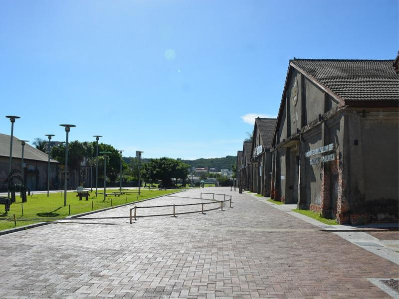
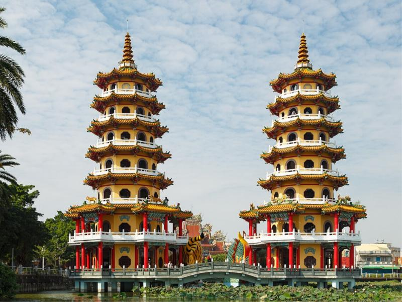
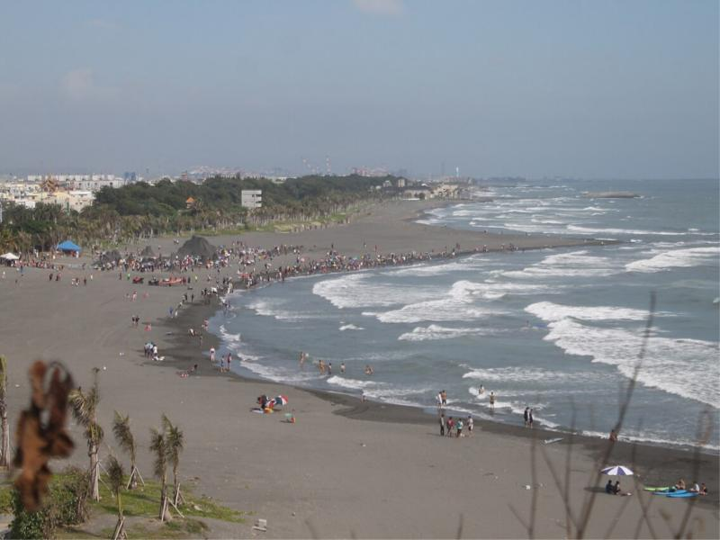
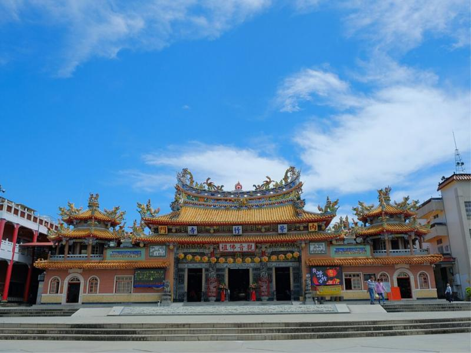

港都一日遊，帶你逛遍高雄！

駁二藝術特區在高雄的鹽埕區，原本是港口旁邊放貨物的舊倉庫，後來改造成展覽和文創的空間。 這裡有很多大型裝置藝術和彩繪牆，很適合拍照，假日常常有市集和表演。

蓮池潭在左營區，最有名的是龍虎塔。聽說從龍的嘴巴進去、老虎的嘴巴出來，可以把壞運氣變成好運氣。 潭邊還有春秋閣等廟宇，可以沿著湖邊散步或騎腳踏車。

從鼓山搭渡輪就可以到旗津，船程只要幾分鐘。旗津有老街可以吃海產， 也有海水浴場和旗後燈塔，傍晚在海邊看夕陽很漂亮。

內門在高雄的山區，也是我讀書的地方。內門最有名的是宋江陣， 還有「總舖師」辦桌的文化，被叫做總舖師的故鄉。上面的照片是內門的紫竹寺。這裡比市區安靜，空氣也比較好。
| 景點 | 地區 | 特色 | 推薦時間 |
|---|---|---|---|
| 駁二藝術特區 | 鹽埕區 | 展覽、裝置藝術 | 下午 |
| 蓮池潭 | 左營區 | 龍虎塔、湖邊散步 | 早上 |
| 旗津 | 旗津區 | 渡輪、海鮮、夕陽 | 傍晚 |
| 內門 | 內門區 | 宋江陣、辦桌文化 | 假日 |
下面是駁二藝術特區的地圖：
想知道更多高雄的景點，可以看 高雄旅遊網。